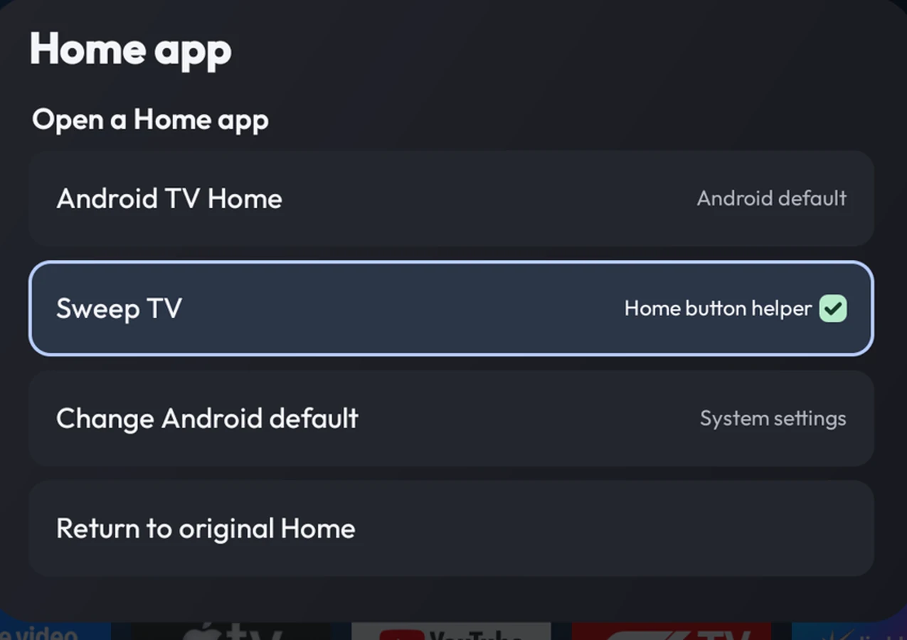
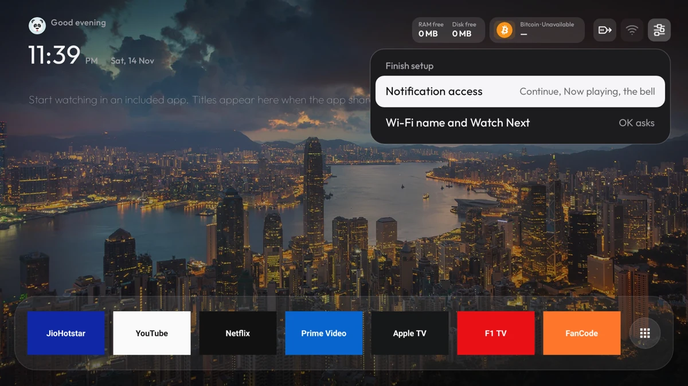
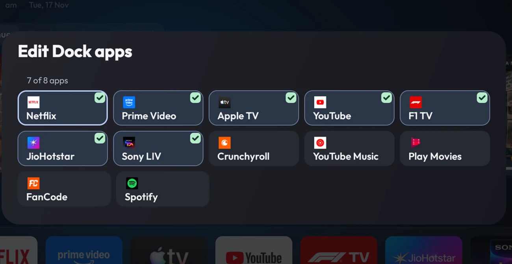

First-time setup
Get Sweep TV ready for your remote and the apps you watch.
Already installed SweepMyTV? Start below. If you still need the app, choose an installation guide. Menu names vary by TV and SweepMyTV version.
1. Open Sweep TV
- On your TV, open Apps and select Sweep TV.
- If Android asks for location or TV listings access on first launch, you can decline and keep using the launcher. Location helps Android share your Wi-Fi name. TV listings lets Sweep TV read Android’s Watch Next row when your TV makes it available.
- Use the remote to open a streaming app from the dock and confirm it launches. Press Back to return, or reopen Sweep TV from Apps.

2. Choose what the Home button opens
If your TV offers a Home app picker in Android settings, select Sweep TV there. Press Home on the remote to check.

If Home still opens the original launcher and you want to change it, open Control Center → Sweep TV settings → System → Finish setup → Home button helper. Review the optional Sweep TV Accessibility helper before enabling it. On some sideloaded installs, Android restricts that switch. If Android blocks it, you can still open Sweep TV from Apps.
Keep your original launcher installed so you can switch back.
3. Set up Continue Watching
In Sweep TV settings → System → Finish setup, review Notification access and the TV listings prompt, if available. On some versions the listings option is under Wi-Fi name and Watch Next. Notification access lets Sweep TV see supported apps’ playback sessions, and TV listings adds titles that apps publish to Android’s Watch Next row.

Try playing a title in one of your streaming apps, then return to Sweep TV and check the Continue row. Entries depend on what each app and TV share.

4. Choose what appears on Home
Open Sweep TV settings → System → Finish setup and scroll to Sports to follow to turn on Formula 1 or Cricket. Both are off when you have no saved choice.
Highlight an app and hold OK on the remote. Use Add to dock, Move, or Remove from dock where available. Open Sweep TV settings to explore themes and dock styles.
